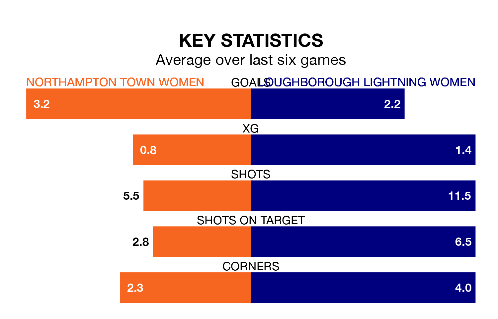

Sunday's early match between Northampton Town Women and Loughborough Lightning Women promises to be one for the neutrals, as two of Womens National League Division One Midlands's most free-scoring sides go head-to-head.
Ahead of the game, Northampton Town and Loughborough Lightning sit fourth and second in the goal-scoring charts, with 25 and 29 goals respectively.
Loughborough Lightning are top of the table after 11 games, of which they have won nine and drawn one, earning 28 points.
Northampton Town are four places behind the away team in fifth, with six wins and one draw putting them on 19 points.
The hosts are in fantastic form in Womens National League Division One Midlands, with five wins and one loss from their last six games.
With four wins and a draw over that period, Loughborough Lightning's form is slightly worse – they have taken 13 points from 18, compared to Northampton Town's 15.
Northampton Town's last match was on Sunday, a 3-0 loss against Leek Town Women.
Loughborough Lightning drew 2-2 with Solihull Moors Women last time out, also on January 7.
Updated: 10:50, 10/01/24